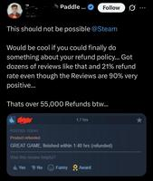
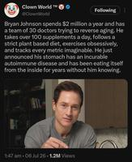

0


Australia plans to double fines for social media platforms that fail to keep under-16s off restricted services, after regulators found 70% of children with accounts remained active three months after the ban took effect. The government says the changes will also give the eSafety Commissioner more power to demand information from platforms and age-assurance providers as teens continue finding ways around the law. Euronews reports: The government said Sunday it would introduce draft legislation this week doubling the maximum penalty to 99 million Australian dollars (63 million euros) for platforms -- including Facebook, Instagram, Snapchat and TikTok -- that do not take reasonable steps to comply with the ban, which became law on 10 December. Communications Minister Anika Wells blamed the platforms directly. "We can all agree we would like the scheme to work better than it is currently, but that is on Big Tech taking the Mickey," she said, speaking to the Australian Broadcasting Corp on Monday. Wells added that she had received monthly updates from the online safety regulator since March and "we are not seeing improvements."
The amendments would also expand the powers of eSafety Commissioner Julie Inman Grant to demand information and documents from platforms -- and from third parties such as age assurance technology providers -- to test claims made by companies about how under-16s continued to circumvent the ban. The government had initially reported more than 5 million children had accounts removed, deactivated or restricted after the legislation passed. But eSafety found in March that 70% of children who held accounts on restricted platforms on the day the ban took effect remained active on Facebook, Instagram, Snapchat and TikTok.
Inman Grant said in April she was considering court action against those platforms and YouTube, alleging they were not taking reasonable steps to exclude children. She said she was satisfied with progress made by the remaining restricted platforms: X, Kick, Reddit, Threads and Twitch. Senior opposition lawmaker Jane Hume said her party would consider supporting the reforms, but pinned blame on the original legislation. "The legislation was clearly undercooked in the first place. The eSafety Commissioner wasn't given the powers to be able to pursue these Big Tech companies," she said.
Read more of this story at Slashdot.
USA Today reports on a Facebook post from a Washington state sheriff's office:
Four residents of Clallam County, a coastal region west of Seattle along northern Washington's peninsula, lost more than $673,000 in just three days, according to the Clallam County Sheriff's Office... The smallest amount lost was $3,500, which someone purchased in Apple gift cards for a scammer posing as an employee with Microsoft technical support, the sheriff's office wrote. Another person lost $50,000 after they clicked on a malicious email and unwittingly granted the scammers access to their financial accounts.
The local Peninsula Daily News reports another scam involved a 64-year-old resident who attempted to contact Coinbase after seeing their account displayed shown as closed:
"Believing they were speaking with a legitimate Coinbase representative, the victim was told there was fraudulent activity on the account and was instructed to download a 'rescue' application," the [sheriff's] release states. "The application allowed the scammer to remotely access the victim's phone." They then convinced the victim to transfer approximately $200,000 worth of cryptocurrency to what was described as a secure wallet. The funds were instead transferred to the scammer and could not be recovered...
In one scam, reported Monday, an 84-year-old Clallam County resident believed they had received an email from their daughter with a photo. After opening the email, a fake Microsoft security alert appeared on the computer directing the victim to call a support number, according to the release. "The victim was transferred to someone claiming to represent the Federal Trade Commission (FTC) and was falsely told they were under investigation in a child pornography and money laundering case," the release states. "The scammers instructed the victim not to contact local law enforcement and claimed local banks were also under investigation. The victim was told their bank accounts were in danger of being seized and was instructed to purchase gold to protect their assets." In three separate transactions, the victim purchased approximately $420,000 worth of gold and gave it to an unknown man waiting at the end of their driveway.
"Only after speaking with bank officials did the victim realize they had been defrauded," the release states.
USA Today offers this advice from the sheriff's press release. "These criminals are professional manipulators who prey on fear, trust and urgency. We encourage everyone to pause before sending money, purchasing gold or gift cards, or transferring cryptocurrency. A simple phone call to a trusted family member, your bank or local law enforcement can prevent a life-changing financial loss."
Read more of this story at Slashdot.
"Mozilla shut down the well-loved read-it-later Pocket app last year, and now Meta is launching an app called Pocket with an entirely different, AI-focused pitch," writes The Verge.
While it's not available for downloads in most locations, Meta's Pocket will allow people "to generate small, interactive apps and games using AI prompts," writes TechCrunch. They're called "gizmos", and Pocket "also offers a scrollable feed where you can play with gizmos others have made."
Some context from The Verge:
Meta CEO Mark Zuckerberg is all in on AI as the new social media, and he's previously described a vision of how users could use AI to make interactive experiences and share them with people. The launch of Pocket appears to be one manifestation of that idea... It follows Meta hiring engineers from a company called Atma Sciences Inc., which made an app called Gizmo, as Business Insider reported in March.
On a help center page, Meta also describes a gizmo as a "playable AI-generated experience," and when you post one, Meta says you can choose to let other people remix them.
"Based on the app's screenshots in Google Play, there are many similarities to Gizmo's original app, which is still listed," notes TechCrunch.
"Pocket is another example of Meta's push to make AI creation tools more mainstream, extending its earlier efforts, which included AI-generated images created via its Meta AI app and AI videos created with its app called Vibes. It has also added AI features across its social platforms... "
Given that Meta has not officially announced Pocket's debut, it's likely that Pocket is still in its initial experimentation phase. Its counterpart Gizmo, however, had generated 635,000 lifetime installs across both iOS and Google Play, according to Appfigures, which noted it had a 98% positive sentiment.
Read more of this story at Slashdot.
America's Justice Department and FBI teamed joined Finland's National Bureau of Investigation to arrest a teenager they say is part of one of the world's biggest cybercrime syndicates, reports Tom's Hardware. The "Scattered Spider" syndicate has extorted over $100 million in ransom payments, according to Department of Justice figures:
19-year-old Peter Stokes is a dual U.S.-Estonian citizen who was trying to board a flight to Japan from Helsinki, when law enforcement caught up with him. [T]he main criminal complaint against Stokes stems from a May 2025 attack on a luxury jewelry dealer based in the United States. The attackers apparently called the company's IT helpdesk using Google Voice, posing as employees. They were able to convince the help desk into resetting their credentials, which allowed them to infiltrate three accounts, two of which had admin privileges. From there, the group, allegedly including Stokes, stole important data and held the jeweler at ransom, demanding an $8 million payment in crypto. The company ultimately regained access to their infrastructure and avoided paying the ransom, but the operational disruption still caused a purported $2 million in losses. This served as the spark that led to Stokes' eventual arrest in Helsinki, as the prosecutors slowly followed the paper and digital trail laid by the attackers.
Microsoft played a key role in the process by providing GDID [Global Device Identifier] data to the FBI to help them apprehend the alleged criminal... [I]t's a unique identifier assigned to every Windows install that tracks device-specific telemetry. It's the reason why sometimes changing a major component in your PC can revoke your Windows license... [T]he court documents from the case reveal that Stokes used Windows, from which investigators were able to link his physical hardware to specific internet activity and locations... Stokes' web activity, videogame history, IP addresses, tool usage (including Ngrok), Azure status, and more were logged with timestamps, and were provided to the investigators by Microsoft...
Stokes was carrying two hard drives full of incriminating evidence with him when boarding his flight to Japan... His real identity has actually been known since 2024, but since he was a minor living across Estonia and the UAE at the time, he could only be monitored until the time was right.
The official criminal complaint even includes a selfie photo that Stokes posted on Snapchat (hiding his face behind dozens of hundred dollar bills). It then notes that behind Stokes the wallpaper, carpet, and furniture match New York's Empire Hotel — and that Stokes had visited the hotel's web site in Germany before then flying to New York...
"Following the arrest, Stokes was extradited to the U.S., where he appeared in front of a federal court in Chicago for the first time on June 30, 2026, and he remains in custody," adds Tom's Hardware.
"The accused is now awaiting trial, having been charged with conspiracy, cyber intrusion, and fraud..."
Read more of this story at Slashdot.
An anonymous reader quotes a report from Ars Technica: Anthropic quickly removed a tracker secretly monitoring Claude Code users in China after a security researcher exposed the hidden code and condemned the spyware-like tracking as a "serious breach of user trust." Last week, a web developer known as "Thereallo" was researching privacy issues in Claude Code and was shocked to find that the AI firm was using "prompt steganography" to hide code that tracks Chinese users "in plain sight." This code wasn't malicious, but it was sending information to Anthropic that most users wouldn't detect, relying on shorthand markers to quietly flag users' timezone, proxy, and potential connection to Chinese AI labs that Anthropic has accused of distillation attacks.
On X, Anthropic engineer Thariq Shihipar confirmed that the tracker was added to Claude Code as an "experiment" in March. According to Shihipar, the code "was meant to prevent account abuse from unauthorized resellers and protect against distillation." Regarding the former, The Washington Post found unauthorized retailers have sold access to free models for $1 a month, and pro subscriptions that can cost $100 monthly sell for "as little as $12." Supposedly, Anthropic has "actually been meaning to take this down for a while," Shihipar said of the hidden code, because engineers have "landed stronger mitigations since then."
Privacy advocates were not happy with the explanation, though, warning that the code is evidence that Anthropic is willing to cross lines to surveil users. That's perhaps especially surprising, considering that Anthropic riled the Trump administration by refusing to allow the US government to use Claude to surveil US users. The AI firm has since sued the White House over the clash. The Post suggested that the tracker incident is a sign that US firms like Anthropic are taking "increasingly aggressive measures" to block Chinese AI firms from copying their models. A more defensive stance has apparently become critical. In the past year, Chinese firms have "consistently matched" US firms' model capabilities "within months," the Post reported. Most recently, "a new, free AI model from Chinese company Zhipu AI was better at finding computer vulnerabilities than Anthropic's Claude Opus 4.8 model, which was released in May," the Post reported.
Read more of this story at Slashdot.
Microsoft is laying off about 4,800 employees, including 1,600 from Xbox, as it restructures around AI investments and tries to reset its struggling gaming business. "Our business is changing because the world around it is changing. The way technology is built, deployed, and used is transforming faster than at any point in my time here," said Amy Coleman, EVP and chief people officer at Microsoft. "Our customers' needs are shifting, the business models that serve them are shifting, and that means the work itself -- what we do, where we focus, and how we're organized -- has to transform too." She continued: "Companies don't get to choose whether their industry changes; they only get to choose whether they change with it. That means we will need to adjust resources and roles and shift how we operate so we can have the greatest impact for our customers." TechCrunch reports: Coleman stressed that the roles being eliminated today "are not being replaced by AI," but noted, "what is true is that AI is changing how work gets done." "Some of the tasks we do every day can now be automated, and that means we all need to keep learning, keep building new skills, and keep adapting as the work evolves," Coleman wrote. [...] Speaking about the Xbox layoffs, Coleman said little: "We are restructuring to position the business for long-term success. Engineering teams across the company will also evolve their structure and priorities to meet customer needs and innovate for the future."
Of today's 4,800 layoffs at Microsoft, 1,600 will hit Xbox, with about 3,200 cuts in total expected through fiscal year 2027, according to Asha Sharma, CEO of Xbox. In an email she sent to employees on Monday, Sharma called this "the most significant restructure in Xbox history." "Our business today is not healthy," Sharma wrote. "We are operating at margins that are 3-10x lower than comparable platform and publishing businesses." She added that Xbox made bets like its monthly subscription service Game Pass, alongside moves to grow its portfolio of content and invest in multi-platform, among other attempts to breathe life into the business. None of those strategies grew at the expected pace, leading to the core business weakening even as Xbox added more teams and investment. "And now the industry is facing the most severe hardware crisis in its history," Sharma said. "We must reset Xbox."
As part of the shift, Microsoft will transition four of its gaming studios to operate under new management, ensuring preservation of intellectual property and ongoing projects. Specifically Compulsion Games and Double Fine Productions will return to independent studios, according to Sharma. Ninja Theory and Undead Labs are coming under new ownership with funding to complete and grow some of their more popular games. According to Sharma's memo, Xbox is also flattening management hard, cutting the current 14 management layers to no more than five, but ideally three. As part of this major organization redesign, Xbox is making longtime executive Helen Chiang chief operating officer with end-to-end profit and loss authority across content, hardware, platform, and services. Xbox's restructuring plan centers around narrowing focus by dropping sprawling creative bets that don't produce platform-scale returns, and instead homing in on core strategic pillars like Mojang and King, the businesses behind Minecraft and Candy Crush.
Read more of this story at Slashdot.
Nintendo will stop selling the original Switch in Europe in mid-February 2027, nearly 10 years after the console's launch. In its place, the company will release updated versions of the Switch 2 and several controllers with user-replaceable batteries to comply with new EU regulations. The Verge reports: The news comes as Nintendo is making a bunch of changes to the rest of its lineup due to EU regulations requiring user-replaceable batteries. Starting this summer, the company says it will start introducing updated versions of various devices on "a rolling basis," ahead of the regulations coming into effect on February 18th, 2027. "There is no difference in functionality between current products and revised products containing user-replaceable batteries," Nintendo says.
The Switch 2 is the most notable product being updated -- the new version is expected to start rolling out in the fall -- but there will also be versions of the Joy-Con controllers, Joy-Con 2, Switch 2 Pro Controller, and N64 and GameCube Switch controllers with user-replaceable batteries. "Due to a variety of factors, revised products may not become available in all European countries simultaneously," Nintendo notes.
Read more of this story at Slashdot.
Google was ordered to pay almost $2 billion this week to Pricerunner, reports Bloomberg:
The Patent and Market Court in Stockholm, which issued the judgment on Wednesday, dismissed most parts of the claim in which Pricerunner sought 80 billion Swedish kronor, or roughly $8.2 billion, in the wake of a European Union antitrust crackdown... The Swedish price-comparison website argued that Google has been abusing its dominant position as a search engine by favoring its own comparison shopping service over competing portals for more than a decade. Wednesday's award compensates for lost revenue caused by Google's preferential treatment of its own comparison-shopping service over independent price-comparison services, conduct that also drives up costs for consumers, [Pricerunner owner] Klarna said in a statement after the judgment...
A Google spokesperson said the company doesn't agree with the court's decision and will consider its legal options. [The ruling can be appealed.] Changes implemented in 2017 to Google's platform are working and generating growth and jobs for hundreds of comparison shopping services operating more than 1500 websites across Europe, according to the statement.
The litigation is linked to a 2017 decision by the European Commission to fine Google €2.4 billion for illegally leveraging its search dominance to give its own shopping service an edge. The EU decision unleashed a wave of so-called follow-on suits, which were delayed for years as Google appealed the EU fine. Two years ago the EU's top tribunal confirmed that the company did violate antitrust laws — meaning EU-based plaintiffs no longer have to prove that in court. A Berlin court last year ordered the tech giant to pay €573 million in damages to two German price-comparison websites, a ruling Google appealed. Similar cases are pending across Europe.
Read more of this story at Slashdot.
"A year ago, the message from many business leaders was that AI was going to wipe out jobs," remembers the Wall Street Journal.But "For the past month or so, tech CEOs have been striking a more optimistic tone."
In late May, OpenAI Chief Executive Sam Altman — who has long predicted that AI will lead to seismic shifts in the workforce — said during a conference, "We've been roughly right on technological predictions and pretty wrong on the social and economic implications." Soon after, he told CNBC, "Our industry underestimated how much we're going to be able to keep people at the center of everything."
Anthropic CEO Dario Amodei, who warned in May 2025 that artificial intelligence could eliminate half of entry-level jobs, a year later highlighted more positive scenarios for AI-adopting businesses: "They can do the same thing with less resources, and that leads to things like layoffs, or they can do more with the same amount of resources. But that requires creativity...."
Is the sunnier outlook a move to win back customers and the public who are souring on AI's world-upending promise? Or is the role of AI in the workplace now just better understood...?
Collectively, the narrative has shifted from worker-light doomsday scenarios caused by AI to a future in which workers keep their jobs — and get a productivity boost. The sentiment change isn't limited to tech leaders: A survey by EY-Parthenon found that the percentage of CEOs who believe AI investments will result in significant reductions in head count fell from around 46% in January 2025 to just 20% this May.
"They may have noticed that the labor market is genuinely not changing (i.e., imploding) as rapidly as they expected," said David Autor, a professor of economics at the Massachusetts Institute of Technology. "They may have realized it was simply bad business to say that your great new product will destroy the economy."
The article notes Amazon founder Jeff Bezos "has a history of predicting that AI will create new jobs," and in June said AI could even lead to a labor shortage. "When asked on CNBC in May about people being afraid of AI taking jobs, he said the reason they're afraid is because 'all these smart people keep saying that.'"
The article then adds that "Fewer people are saying it now."
Read more of this story at Slashdot.
"Hundreds of freedom lovers are rallying behind a US Air Force engineer" who's been accused of damaging over a dozen AI-integrated surveillance cameras last year and even knocking down their poles.
Long-time Slashdot reader schwit1 shares
this article from Futurism:
According to local channel WAVY, Virginia-based Air Force engineer and mechanic Jeffrey Sovern is facing 13 counts of destruction of property, as well as six counts of both petit larceny and possession of burglary tools related to the destruction of Flock license plate cameras... [Wavy reports the cameras were sometimes pointed in the wrong direction or thrown to the street.]
Armed with garbage bags, spray paint, and even chainsaws, a not insignificant number of privacy vigilantes have taken the fight to Flock, using any means to free their neighborhoods of the ominous surveillance poles. On a GoFundMe page to raise money for his legal defense, the 41-year-old Sovern explained that this kind of privacy-minded vandalism has far more support than would outwardly appear...
Sovern kicked off the campaign late in December of 2025, where he encouraged his supporters to "reach out to the local governments and demand that these systems are taken down." The Virginia resident initially set his funding goal to $8,500. As news of his case has spread across the web, the amount of support has far outpaced those already-hopeful aspirations. [Two hours ago the legal fund stood at $23,326 from over 680 donors].
Read more of this story at Slashdot.
It was more than two years ago that TypeScript's creator Anders Hejlsberg announced plans to rewrite its compiler in Go. This week Microsoft announced its first Go-based release candidate for TypeScript 7.0, reports InfoWorld:
TypeScript 7.0 is often about 10 times faster than TypeScript 6.0, Microsoft said, thanks to native code speed and shared memory parallelism... Unlike TypeScript 6.0, TypeScript 7.0 performs many steps in parallel, including parsing, type checking, and emitting, Microsoft said. Some of these steps, such as parsing and emitting, can mostly be done independently across files. For that reason, parallelization automatically scales well with larger codebases with relatively little overhead. However, not every step in a TypeScript build is easily parallelizable, Microsoft said.
Microsoft plans to release TypeScript 7.0 within the next month, the article points out, but developers can try the new compiler by installing it from the typescript package on npm: npm install -D typescript@rc
Read more of this story at Slashdot.
"Companies spending heavily on AI are growing headcount faster, even in the entry-level roles that many fear are doomed," writes TechCrunch. That's the conclusion of new report tracking AI spending from Ramp's corporate card/bill pay data as well as Revelio Labs' workforce records from 21,599 U.S. firms:
According to the report, "high-intensity adopters" — firms that spend on average $30 per employee per month on AI in the first three months — saw headcount increase 10.2%. Headcount also rose across functions, including engineering, sales, administration, customer service, finance, marketing, and scientist roles. The strongest job growth among high-intensity adopters was in the information sector, which includes software, internet, media, and tech-adjacent firms.
Despite these positive signals, the data isn't as rosy as it seems. It skews heavily toward tech-forward, knowledge-work firms — ones that might have VC-backing and are growing fast anyway, making it difficult to say whether AI is contributing to the hiring or just showing up at companies that are expanding anyway. "This paper does not show that AI universally creates jobs," the paper's authors admit, "but it does counter claims that AI will lead to broad job losses."
It also counters claims that AI is killing all junior jobs. Recent research from Goldman Sachs found that AI has already erased about 16,000 net jobs per month over the past year, with Gen Z and entry-level workers taking the brunt of the burden. But in tech-forward firms, the report finds that entry-level headcount actually rose by 12%... "For software and technology firms, AI can make core output cheaper or faster to produce: writing code, debugging, building internal tools, producing technical documentation, and supporting product development," the report reads. "Lower production costs in these workflows can raise the return to expanding the whole firm, not just the engineering team."
But companies that buy subscriptions and run pilots, yet did not go on to make sustained investments, don't tend to see any gains in headcount, per the report. That sets up the potential for a widening gap between firms that have the resources — like capital, technical staff, founder networks, and management bandwidth — to turn AI adoption into actual business gains and those that are stuck experimenting with subscriptions. In other words, this report suggests that firms that already have the resources are the ones that will see the largest gains.
CNBC argues another AI "narrative" was challenged this week: that open source can't make money. "The assumption was that giving your model away for free meant no business. That's breaking too, as open-model companies start posting real revenue and enterprises move from renting AI to running their own."
Read more of this story at Slashdot.
Microsoft is investing $2.5 billion in a new group "assisting clients with AI implementations," reports CNBC:
[Microsoft] said Thursday that 6,000 employees will be embedded with clients, in a practice that's become known as forward deployed engineering [or FDE]... The announcement comes two days after cloud rival Amazon said it was putting $1 billion behind an FDE initiative to support fast-paced AI engagements. Leading AI labs Anthropic and OpenAI both established FDE groups in May, partnering with private equity firms, banks and consulting firms.
Alongside its technology peers, Microsoft has sunk tens of billions of dollars into building data centers that run generative AI models. Microsoft has also released a variety of AI services, with mixed results. The Microsoft 365 Copilot AI assistant has yet to gain anything approaching ubiquity in the business world, and the GitHub Copilot coding agent has ceded market share to newer players. Microsoft's stock has slumped 21% this year, by far the worst performance among the mega-cap tech companies. One concern on Wall Street is that AI models that quickly compose code might threaten mature software companies...
Microsoft has for years provided support and implementation services to customers. The company generated about $2.1 billion in revenue from enterprise and partner services in the March quarter, up 2.5% from a year earlier.
Read more of this story at Slashdot.
Have you ever needed a Linux application which only exists in the Windows world? Long-time Slashdot reader BrendaEM writes:
Windows does have a lot of useful app (but smaller than "power apps"). Some of these are closed source, some are open, but they're not all available in Linux yet.
My list would have to contain Gimp Tookit versions of: IrfanView image manager, which I think is unequaled in Linux (though it does work to some extent under Wine). I also miss the full version of 7-Zip, because of its better compression settings, which File-Roller does not provide, though the Linux port p7zip is available (though unnoticed by common distributions). Lastly, I think that Notepad++ would be a good addition to Linux.
That last one drew some pushback from long-time Slashdot reader jesco. "If there's one area where Linux shines, then it's the availability of high-quality text editors. Last time I looked Kate was still pretty nice, and there's Emacs, Vim and Neovim" if you're partial to command lines.
But are there any daily-drive apps you still find yourself needing? Share your own thoughts in the comments.
Which apps aren't available on Linux?
Read more of this story at Slashdot.
Americans now spend an average of 35 minutes a day socializing, down from 45 minutes two decades ago, according to American Time Use Survey data. The decline spans all age groups but is sharpest among 15- to 24-year-olds, whose daily socializing has fallen from about an hour to 35 minutes. Axios reports: Sociologists and psychologists point to several trends driving this phenomenon, which Substack writer Derek Thompson dubbed "The Anti-Social Century" in the Atlantic last year. We're all on our smartphones, often interacting through screens instead of face to face -- even though social media is no substitute for spending time together in person.
Teens, in particular, spend an average of 4.8 hours a day on apps like TikTok, Instagram and Snapchat, according to Gallup. The shift to remote work -- and life -- during the pandemic has persisted, keeping more of us homebound. Longer-term trends are reshaping daily life in ways that make isolation easier. Homes are bigger and more comfortable, with larger TVs. Virtually every restaurant is on a food delivery app, making it easier than ever to stay in.
Also contributing to the trend is the decline of gathering spaces, Axios' Avery Lotz writes. A 2025 report from CU Boulder researchers uncovered widespread closures of all kinds of hangout spots -- from libraries to coffee shops to museums -- in the last decade or so. Churches are also shuttering at unprecedented rates, Axios' Russell Contreras reports.
Read more of this story at Slashdot.
Sam Smith / GamesBeat : Xbox appoints Helen Chiang as its first COO; Chiang was previously corporate vice president for the Minecraft Franchise and the studio head of Minecraft — Become a member of GB MAX to gain exclusive access to the industry and to the most influential global B2B leadership community in the business of gaming, entertainment, and tech.
Ben Fritz / Wall Street Journal : Source: Xbox Game Pass currently has about 30M subscriptions; document: Microsoft had projected Game Pass subscriptions would reach around 77M this year — The videogame unit's revenue has fallen and its Netflix-like subscription service is far below expectations
Julia Fioretti / Bloomberg : A term sheet shows Tencent is seeking to raise as much as $1.55B in a selldown of part of its stake in short-video app operator Kuaishou through a block trade — Tencent Holdings Ltd. is seeking to raise as much as $1.55 billion in a selldown of part of its stake in short-video app operator Kuaishou Technology through a block trade.
Sam Witteveen / VentureBeat : Tencent releases Hy3, a 295B-parameter model that it says is competitive with GLM-5.1 and 5.2, under the Apache 2.0 license, following a preview launch in April — For the past year, the awkward secret of the open-weight model boom has been that many of the strongest Chinese releases …
Julia Hornstein / The Information : Source: Mercor hit over $2B in gross revenue run rate in June, double its pace in April, and is profitable on a free cash flow basis — Mercor hit over $2 billion in gross revenue run rate in June, double its pace earlier this year, according to a person with direct knowledge of the company's financials.
Adam Harrington / CBS News : Illinois Governor JB Pritzker signs SB 315, a bill requiring annual third-party safety audits of leading AI companies; OpenAI and Anthropic backed the bill — Add CBS News on Google — Illinois Gov. JB Pritzker on Monday signed legislation aimed at holding artificial intelligence companies accountable.
Andrew Webster / The Verge : Nintendo plans to stop selling the original Switch, Lite, and OLED in Europe from mid-February 2027 and update the Switch 2 to comply with new EU battery rules — The decision comes alongside an update to the Switch 2 to coincide with European battery regulations.
James Hunt / The Block : Filing: Strategy sold 3,588 bitcoin for ~$216M between June 29 and July 5 to replenish its USD reserve; its holdings have an $11.4B paper loss at current prices — Quick Take — Strategy has sold 3,588 BTC for approximately $216 million, reducing its total holdings to 843,775 BTC.
Bloomberg : Microsoft's Xbox unit plans to cut 3,200 jobs over the next year, including 1,600 on Monday, and divest up to five studios, including Ninja Theory, in a “reset” — Compulsion and Double Fine studios will become independent; Undead Labs and Ninja Theory will be sold.
Tom Warren / The Verge : Microsoft is laying off ~4,800 employees, or ~2.1% of its workforce; most are in sales or Xbox, where ~20% of jobs are set to be cut by the end of FY 2027 — Most of the job losses are in Microsoft's Xbox and commercial sales organizations. … A year after cutting around 9,100 employees …
Natalie Lung / Bloomberg : Reddit says its AI-powered content moderation systems caught 25K “spammy posts and comments” per day in Q1, reducing users' exposure to such content by 20% YoY — Reddit Inc. is battling a new kind of spam: stealth marketing content created by brands that want to get mentioned …
Akash Sriram / Reuters : Broadcom agrees to expand its Apple partnership through 2031 to develop and supply custom chips; in 2023, the companies announced a multibillion-dollar 5G deal — Broadcom (AVGO.O) said on Monday it has agreed to expand its partnership with Apple (AAPL.O) through 2031 to develop and supply custom chips …
CNBC : Anthropic signs a 20-year, ~$19B lease to use a TeraWulf data center in Kentucky, set to have a ~400MW capacity and to start delivering power in H2 2027 — Anthropic on Monday signed a 20-year lease to use a TeraWulf data center in Kentucky. — The data center, located about an hour southwest …
Natalie Breymeyer / Axios : AI agent training platform Bespoke Labs raised $40M across a seed led by 8VC and a Series A led by Wing, saying the funding gives it almost two years of runway — Bespoke Labs, an AI agent training platform, raised $40 million across seed and Series A funding, CEO Mahesh Sathiamoorthy tells Axios exclusively.
Ryan Vlastelica / Bloomberg : Filing: Brookfield-backed data center company Csquare seeks to raise up to $1.35B in an IPO, selling 50M shares at $23 to $27 each for an up to $4.18B valuation — Csquare Inc., a data center company backed by Brookfield Corp., is seeking to raise as much as $1.35 billion in a US initial public offering.